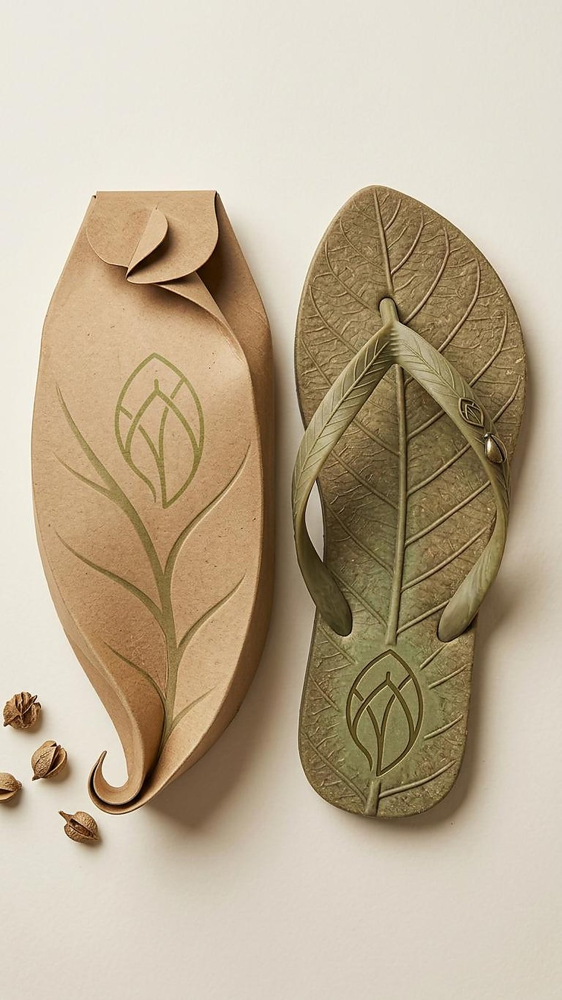

Verdeá
Marca de chinelos com tingimento natural, construída a partir da biomimética. Sola e tira desenham a nervura de uma folha real; a embalagem em papel kraft repete a mesma forma e carrega uma semente — o produto termina plantado, não descartado.
Biomimética
Tingimento natural
Embalagem
Identidade
Ver o projeto →